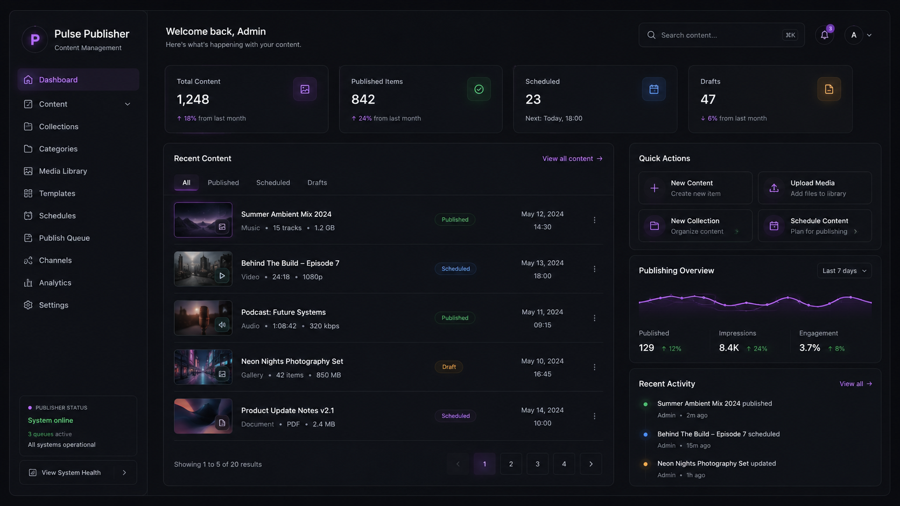

Site continuity
Pages, sections, screenshots, updates, and missing content stay connected to the real platform.
Publishing intelligence for websites, updates, media, and social presence.
Pulse Publish keeps websites, updates, media, and social publishing aligned through one approval-aware workflow.

Pages, sections, screenshots, updates, and missing content stay connected to the real platform.
Copy, captions, page changes, and social posts are prepared for review in the same workflow.
Ideas, drafts, reviewed updates, approved posts, and reusable content move through visible states.
The Ecosystem Participant stays in control, with public updates reviewed before release.
Website pages, media assets, and social content reinforce the same public story.
Pulse Publish can surface updates when visuals, screenshots, capability, or platform direction changes.
Pulse Publish keeps public language, visuals, updates, and social planning aware of what the platform is becoming. The result is a digital presence that stays coherent as the ecosystem evolves.
Pulse Publish keeps pages, updates, visuals, drafts, and publishing queues connected to the real shape of the Pulse platform.
Prepare site changes and identify stale pages.
Draft posts for review and approval.
Hold content until The Ecosystem Participant approves it.
Adapt approved content across website and social channels.
Track what has already been published.
Keep public pages aligned with real module changes.